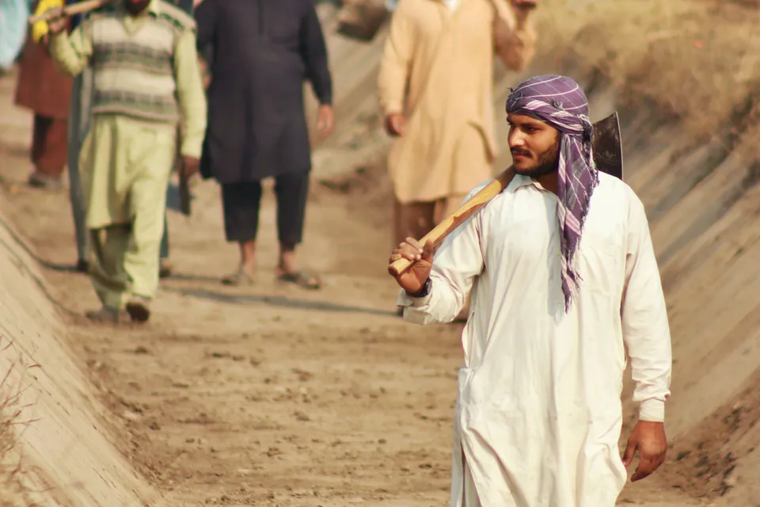
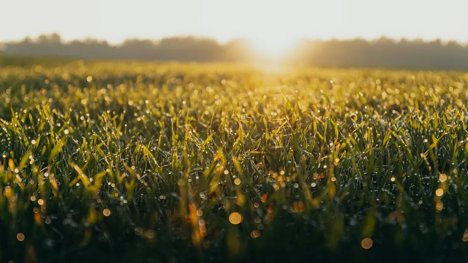

Approach
How we work
Every AgReCir programme follows the same field model, adapted to the crop, the standard and the client. Here's what happens, and who does it.
Scope
With the client we agree the crop, region, volume, standard, timeline and reporting. We visit the area before we commit to numbers.
Select and onboard
We identify farmers and farmer groups, explain what the programme asks of them and what they gain, and register each farm and plot.
Train
Field officers run practical sessions through the season, at demonstration plots and on farmers' own land.
Implement
Farmers apply the practices with regular visits from our team. Problems are dealt with in the season, not after it.
Inspect
Internal Control Inspectors inspect every farm against the standard and record what they find.
Certify
We prepare the group and its documents for the external audit by an accredited certification body, then act on any findings.
Link to market
Certified harvests go to certified ginners, buyers or processors, with records that keep the chain intact.
Measure and report
QA officers check the data. We report on farmer income and resilience, soil and biodiversity, water and carbon, and traceability.
Who does what
| Role | Responsibility |
|---|---|
| Area coordinator | Runs the programme in a district |
| Internal Control Inspector | Inspects farms against the standard |
| Field officer | Trains and supports farmers day to day |
| Quality assurance officer | Checks data and documents |
| Senior Manager, Implementation & Compliance | Oversees implementation and certification |
| Director of Programmes | Programme design, contracts, compliance systems |
Who we work with along the way
Textile manufacturers and exporters, certification bodies and sustainability platforms, local NGOs and farmer cooperatives, and testing laboratories and research institutions.

Tell us what you need to grow, certify or source.
Share the crop, the region and the standard your buyer asks for. We'll come back with how we'd approach it.